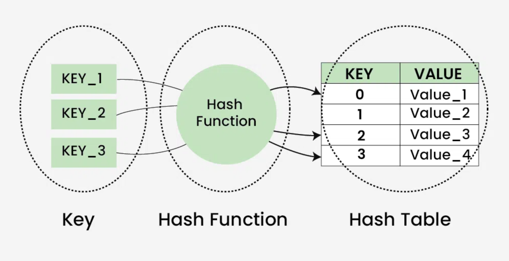

Hash Tables
A hash table stores data as key-value pairs. A hash function converts a key into an index, allowing very fast lookup. In many languages, this is what powers structures like dictionaries or maps.

Why they’re powerful
If the hash function distributes keys well, inserting, deleting, and searching can be very fast. Hash tables are a common choice when you need to check whether something exists quickly.
Collisions (simple explanation)
A collision happens when two different keys map to the same index. Common ways to handle collisions include storing multiple items in the same spot (like a list) or finding another open spot.
Typical efficiency: average-case lookup is often O(1), but worst-case can degrade to O(n).
How Hashing Works
A hash function converts a key into an index in an array. The goal is to distribute keys evenly to reduce collisions.
Common Uses
- Databases for quick record lookup
- Caching systems
- Counting frequencies of elements